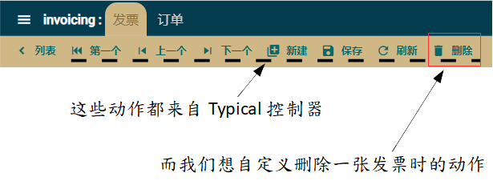
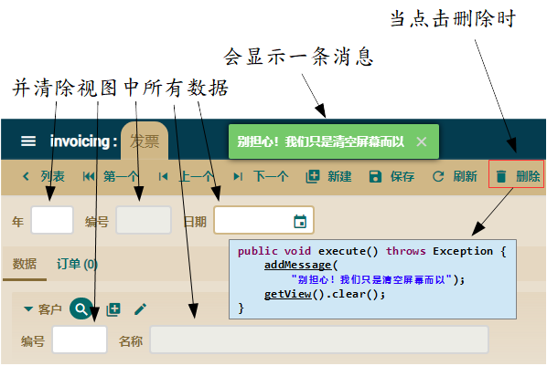
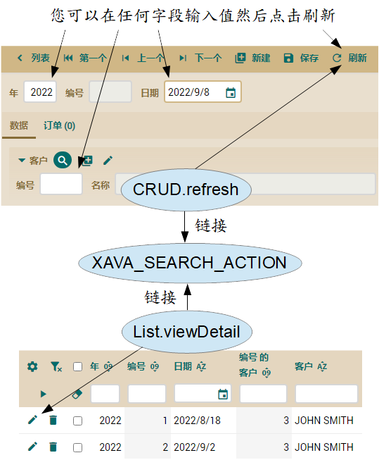
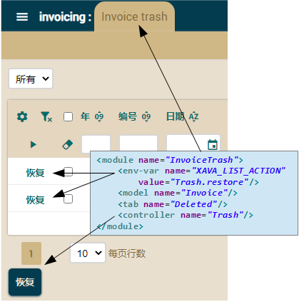

课程：1. 入门教学 |
2. 基本域模型（上） |
3. 基本域模型（下） |
4. 优化用户界面 |
5. 敏捷开发 |
6. 映射式超类继承 |
7. 实体继承 |
8. 视图继承（View） |
9. Java 属性 |
10. 计算属性 |
11. 用在集合的 @DefaultValueCalculator |
12. @Calculation 和集合总计 |
13. 从外部文件的 @DefaultValueCalculator |
14. 手动更改 schema |
15. 多用户时默认值的计算 |
16. 同步持久属性和计算属性 |
17. 从数据库中的逻辑 |
18. 使用 @EntityValidator 进行验证 |
19. 验证替代方案 |
20. 删除时验证 |
21. 自定义 Bean Validation 注解 |
22. 在验证中调用 REST 服务 |
23. 注解中的属性 |
24. 改进标准行为 |
25. 行为与业务逻辑 |
26. 参照与集合 |
A. Architecture & philosophy |
B. Java Persistence API |
C. Annotations |
D. Automated testing
我希望您对 invoicing 应用程序的代码非常满意。它真的很简单，基本上是实体，一些简单的类来模拟您的问题。所有的业务逻辑都在这些实体中，OpenXava 会围绕着它们生成一个应用程序。
然而，人不能只靠业务逻辑生活。良好的行为也是很重要的。比起 OpenXava 自带的标准行为，您或您的用户会渴望在应用程序中的添加某些不同的行为。有时为了用户的良好体验是必需优化某些行为地。
应用程序的行为是由控制器定义的。控制器只是动作的集合，动作是用户点击链接或按钮时所执行的代码。您可以自定义控制器和动作，并将它们与模块或实体相关联，从而优化 OpenXava 的行为。
我们将在本章改进标准控制器和动作，以便自定义 invoicing 应用程序的行为。
自定义动作
默认情况下，一个 OpenXava 的模块在您管理实体上的功能非常全面，其中包括添加、修改、删除、搜索、生成 PDF 报告、导出到 Excel (CSV) 以及将数据导入实体。这些动作默认包含在 Typical 控制器中。您可以通过定义自己的控制器来优化或继承模块的行为。本节将教您如何定义自己的控制器并编写自定义动作。
Typical 控制器
默认情况下，Invoice 模块会使用来自 Typical 控制器的动作。此控制器在
github 的 xava 文件夹 中 default-controllers.xml 里。控制器的定义是一串 XML 里包括动作的列表 。 OpenXava 默认将 Typical 控制器应用于所有模块。您可以看它的定义：
<controller name="Typical"> <!-- 'Typical' 从以下控制器中继承它们的动作 -->
<extends controller="Navigation"/> <!-- 從'Navigation', -->
<extends controller="CRUD"/> <!-- 從'CRUD' -->
<extends controller="Print"/> <!-- 從'Print' -->
<extends controller="ImportData"/> <!-- 和從 'ImportData' 控制器中-->
</controller>
在这里，您可以看到如何从其他控制器定义一个控制器。这是控制器中的继承。在这种情况下，Typical 控制器拥有 Navigation、Print 和 CRUD 控制器的动作。Navigation 可以在详细模式下浏览对象的动作。Print 包含打印 PDF 报告以及导出到 Excel 的动作。CRUD 由创建、读取、更新和删除的动作组成。ImportData 允许加载具有表格格式（csv、xls、xlsx）的文件以将记录导入模块的动作。以下代码显示 CRUD 控制器的摘录：
<controller name="CRUD">
<action name="new"
class="org.openxava.actions.NewAction"
image="new.gif"
icon="library-plus"
keystroke="Control N"
loses-changed-data="true">
<!--
name="new": 用于从应用程序其他地方引用该动作的名称
class="org.openxava.actions.NewAction" : 具有动作逻辑的类
image="images/new.gif": 此动作的图像,
in case "useIconsInsteadOfImages = false" of "xava.properties"
icon="library-plus": 默认情况下此动作显示的图标
keystroke="Control N": 用户可以按下以用来执行此动作的键
loses-changed-data="true": 如果用户点击这个动作并没有事先保存则丢失当前数据
-->
<set property="restoreModel" value="true"/>
<!-- 动作类的 restoreModel 属性会在执行之前设置为true -->
</action>
<action name="save" mode="detail"
by-default="if-possible"
class="org.openxava.actions.SaveAction"
image="save.gif"
icon="content-save"
keystroke="Control S"/>
<!--
mode="detail": 此动作仅在详细模式下显示
by-default=”if-possible”: 当用户按下 ENTER 键时将执行此动作
-->
<action name="delete" mode="detail"
confirm="true"
class="org.openxava.actions.DeleteAction"
image="delete.gif"
icon="delete"
available-on-new="false"
keystroke="Control D"/>
<!--
confirm="true" : 会在执行动作之前询问用户
available-on-new="false" : 创建新实体时，此动作不可用
-->
<!-- 更多动作... -->
</controller>
在上面您可以看到如何定义动作。基本上，相当于将名称与执行该逻辑的类链接起来。此外，它定义了一个图标和一个按键，并且如何使用 <set /> 配置动作类。
默认情况下，动作会以列表和详细模式显示。不过，您可以通过 mode 属性指定动作应仅以“列表”或“详细”模式显示。
优化一个模块的控制器
首先，我们将优化 Invoice 模块的删除动作。我们的目标是修改删除的过程，以便当用户点击删除按钮时发票不会被删除，而是简单地标记为 deleted。这样，我们可以在需要时恢复已删除的发票。

上图显示 Typical 的动作。我们希望 Invoice 模块包含这些动作，除了删除的动作，我们将为它编写我们自己的逻辑。
您必须在项目中 src/main/resources/xava 文件夹的 controllers.xml 文件中为 Invoice 定义自己的控制器，如下：
<?xml version = "1.0" encoding = "ISO-8859-1"?>
<!DOCTYPE controllers SYSTEM "dtds/controllers.dtd">
<controllers>
<controller name="Invoice"> <!-- 与实体同名 -->
<extends controller="Typical"/> <!-- 拥有来自 Typical 的所有动作 -->
<!-- Typical 已经有一个删除的动作，通过使用相同的名称来覆盖它 -->
<action name="delete"
mode="detail" confirm="true"
class="com.yourcompany.invoicing.actions.DeleteInvoiceAction"
icon="delete"
available-on-new="false"
keystroke="Control D"/>
</controller>
</controllers>
要为您的实体定义控制器，必须创建一个与实体同名称的控制器，也就是说，如果存在名为 Invoice 的控制器，则在运行 Invoice 模块时将会使用此控制器而不是 Typical。
我们的 Invoice 控制器从 Typical 扩展，因此Typical 中的所有动作都可用于 Invoice 模块。在 Invoice 控制器中定义的任何动作都是可供用户点击的按钮。不过由于我们将动作命名为 delete，跟 Typical 控制器里的动作同名，因此我们将覆盖它。换句话说，只有我们新的删除动作会出现在用户界面中。
编写您的动作
首先，创建一个名为 com.yourcompany.invoicing.actions 的新包。然后在其中创建一个名为 DeleteInvoiceAction 的类，代码如下：
package com.yourcompany.invoicing.actions; // 在 actions 包
import org.openxava.actions.*;
public class DeleteInvoiceAction
extends ViewBaseAction { // ViewBaseAction 有 getView()、addMessage()、等
public void execute() throws Exception { // 动作的逻辑
addMessage( // 添加一条消息以显示给用户
"Don't worry! I only have cleared the screen");
getView().clear(); // getView() 返回 xava_view 对象
// clear() 清除用户界面中的数据
}
}
动作是个简单的类。它有一个 execute() 方法，是用户点击相应的按钮或链接时会执行的逻辑。一个动作必须实现 org.openxava.actions.IAction 接口，不过通常从 org.openxava.actions 包中扩展 BaseAction、ViewBaseAction 或任何其他基本动作更方便。
ViewBaseAction 有一个视图属性，您可以在 execute() 中使用 getView()。这个 org.openxava.view.View 类型的对象允许您管理用户界面。在上面我们使用 getView().clear() 清除所显示的数据。
我们还使用 addMessage()。所有 addMessage() 添加的消息将在动作执行结束时显示于用户。您可以在 src/main/resources/i18n/invoicing-messages_zh.properties 中添加要显示的消息或条目的 id。
在下图中演示了添加自定义删除动作后 Invoice 模块的行为：

这当然是非常笨的行为，所以现在让我们给它添加真正的功能。为了在不删除的情况下将发票标记为已删除，我们需要在 Invoice 添加一个新属性。我们称它为 deleted。如下：
@Hidden // 默认情况下不会在视图和列表中显示
@Column(columnDefinition="BOOLEAN DEFAULT FALSE") // 填充 false 而不是空
boolean deleted;
如您所见，它是一个普通的布尔属性。唯一的细节是使用 @Hidden 注解。这意味着当生成默认视图或表格列表时，将不会显示 deleted 属性；不过如果您将其放入 @View(members=) 或 @Tab(properties=) 中，它将显示出来。将此注解运用于供开发人员内部使用和查看但对用户没有意义的属性上。
我们使用 @Column(columnDefinition=) 在列中填充 false 而不是 null。在这里，您可以定义 SQL 的列。对于更新数据库会更快，但代码更依赖于数据库。
我们现在为您的动作编写它真正的代码：
public void execute() throws Exception {
Invoice invoice = XPersistence.getManager().find(
Invoice.class,
getView().getValue("oid")); // 我们从视图中读取 id
invoice.setDeleted(true); // 修改实体的状态
addMessage("object_deleted", "Invoice"); // 删除的消息
getView().clear(); // 清除视图
}
视觉效果是一样的，显示一条消息并清除视图，但在这种情况下，我们实际上还做了一些工作。我们找到与当前视图关联的 Invoice 实体并修改其 deleted 属性。我们只需要做这些，因为 OpenXava 会自动提交 JPA 事务。这意味着您可以读取任何对象并从动作中修改其状态，并且当动作完成时，修改后的值将存储在数据库中。
但我们在这里留下了一个松散的结局。 “删除”按钮在删除实体后仍保留在视图中，也就是删除后没有对象，如果用户再次点击该按钮，搜索指令将失败，并向用户显示一条有点技术性和难以理解的消息。我们可以通过不显示按钮来优化这种情况，例如在我们单击新建按钮时。注意execute()的小修改：
public void execute() throws Exception {
// ...
getView().clear();
getView().setKeyEditable(true); // 新建实体
}
使用 getView().setKeyEditable(true) 表示我们正在创建一个新实体，并且由于此动作的 available-in-new 属性为 false ，因此不会显示删除按钮。
现在您己知道如何编写自己的自定义动作，是时候看看如何编写通用代码了。
通用动作
上面的 DeleteInvoiceAction 代码是编写动作的典型方法。该代码直接访问和操作您的实体。
但有时您在动作中会碰到能在这应用程序重复使用的逻辑，甚至能在其它应用程序中使用的。而在这种情况，您可以使用一些技术来编写可重用的代码，将您的自定义的动作转换为通用动作。
让我们看如何用这些技术来编写通用的动作代码。
使用 MapFacade 的通用代码
想象一下，您也想将 DeleteInvoiceAction 用于 Order 实体。不！假设您想将它用在此应用程序所有拥有 deleted 属性的实体。也就是说，您希望有一个能标记为 deleted 的动作，而不是实际从数据库中删除，不止在发票上而是所有实体。在这种情况下，仅仅用当前代码是不够的。您需要更通用的代码。
您可以使用 OpenXava 中名为 MapFacade 的类来开发通用的动作。 MapFacade（来自 org.openxava.model 包）允许您使用 Map 管理实体的状态，这非常实用，因为 View 也是使用 Map 工作的。此外，Map 比对象更加动态，因此更适合通用代码。
让我们重写删除动作。首先，将其从 DeleteInvoiceAction（删除 Invoice 对象的动作）重命名为 InvoicingDeleteAction（Invoicing 应用程序的删除动作）。这意味着您必须更改 controllers.xml 中动作的类名条目：
<action name="delete"
mode="detail" confirm="true"
class="com.yourcompany.invoicing.actions.InvoicingDeleteAction"
icon="delete"
available-on-new="false"
keystroke="Control D"/>
现在，将您的 DeleteInvoiceAction 重命名为 InvoicingDeleteAction 并编写其代码：
package com.yourcompany.invoicing.actions;
import java.util.*;
import org.openxava.actions.*;
import org.openxava.model.*;
public class InvoicingDeleteAction extends ViewBaseAction {
public void execute() throws Exception {
Map<String, Object> values =
new HashMap<>(); // 实体中要修改的值
values.put("deleted", true); // 我们将 deteled 属性设置为 true
MapFacade.setValues( // 修改该实体的值
getModelName(), // 来自 ViewBaseAction 的方法
getView().getKeyValues(), // 要修改的实体的键
values); // 要改变的值
resetDescriptionsCache(); // 清除組合的缓存
addMessage("object_deleted", getModelName());
getView().clear();
getView().setKeyEditable(true);
getView().setEditable(false); // 將视图設为不可编辑
}
}
这个动作所执行的逻辑与前一个动作一样，但它不引用 Invoice 实体。所以此动作是通用的，您可以将其与 Order、Author 或任何其他实体一起使用，只要它们具有 deleted 属性即可。诀窍在于 MapFacade允许您由 Map 修改实体。这些映射可以直接从视图中获取（使用 getView().getKeyValues()），也可以像上面的值一样创建。
此外，您可以看到对上个版本的两个改进。首先，我们调用来自 BaseAction 的 resetDescriptionsCache() 方法。此方法用于清除组合的缓存。当您修改实体时，如果您希望组合即时更改，则需要这样做。其次，我们调用 getView().setEditable(false)。这会禁用视图的编辑器，以防止用户在视图中填写数据。如果要创建新实体，用户必须点击新建。
现在您的动作已准备好与任何实体使用。我们可以将 Invoice 控制器在 controllers.xml 中复制并粘贴，作为 Order 控制器使用。这样，我们新的通用删除逻辑也将用于 Order。等一下！我刚刚说“复制和粘贴”吗？我们不想坠落地狱，对吧？因此，我们将使用一种更自动化的方式将我们新的动作应用于所有模块。让我们看下一节。
更改所有模块的默认控制器
如果您只为 Invoice 使用 InvoicingDeleteAction，那么在 controllers.xml 的 Invoice 控制器中定义它是一个不错的方法。但是，我们刚刚改进了这个动作，唯一的目的是让它可重用，所以让我们重用它。为此，我们将一次性为所有模块分配控制器。
第一步是在 controllers.xml 中将控制器的名称从 Invoice 更改为 Invoicing：
<controller name="Invoicing">
<extends controller="Typical"/>
<action name="delete"
mode="detail" confirm="true"
class="com.yourcompany.invoicing.actions.InvoicingDeleteAction"
icon="delete"
available-on-new="false"
keystroke="Control D"/>
</controller>
如您所知，当您使用实体的名称（如 Invoice）作为控制器名称时，该控制器将默认用于该实体的模块。因此，如果我们更改控制器的名称，该控制器将不会用于实体。实际上，任何模块都没有使用 Invoicing 控制器，因为没有称为 Invoicing 的实体。
我们想让 Invoicing 控制器成为我们应用程序中所有模块的默认控制器。为此，我们需要修改位于 src/main/resources/xava 文件夹中的 application.xml 文件。如下：
<?xml version = "1.0" encoding = "ISO-8859-1"?>
<!DOCTYPE application SYSTEM "dtds/application.dtd">
<application name="invoicing">
<!--
A default module for each entity is assumed with the
controllers on <default-module/>
-->
<default-module>
<controller name="Invoicing"/>
</default-module>
</application>
通过这种简单的方式，您应用程序的所有模块都将使用 Invoicing 为默认控制器，而不是 Typical 。试着执行您的 Invoice 模块并查看在删除时如何执行 InvoicingDeleteAction。
您也可以尝试 Order 模块删除，但它不会执行，因为它没有 deteled 属性。我们可以将 deleted 属性添加到 Order 中，并与新的控制器一起使用，但我们将使用更好的方法，而不是将 deleted 属性“复制并粘贴”到我们所有的实体中。我们在下一节中看如何。
先回到模型类
现在您的任务是将 deleted 属性添加到应用程序的所有实体中，以让 InvoicingDeleteAction 起作用。这是个使用继承将共享的代码放在同一个地方的好时机，而不是使用臭名昭著的“复制和粘贴”。
首先从 Invoice 中删除 deleted 的属性：
public class Invoice extends CommercialDocument {
//@Hidden
//@Column(columnDefinition="BOOLEAN DEFAULT FALSE")
//boolean deleted;
// ...
}
现在在 com.yourcompany.invoicing.model 包中创建一个名为 Deletable 的新映射超类：
package com.yourcompany.invoicing.model;
import javax.persistence.*;
import org.openxava.annotations.*;
import lombok.*;
@MappedSuperclass @Getter @Setter
public class Deletable extends Identifiable {
@Hidden
@Column(columnDefinition="BOOLEAN DEFAULT FALSE")
boolean deleted;
}
Deletable 是一个映射式超类。请记住，映射式超类不是实体，而是具有属性、方法和映射注解的类，可作为实体的超类。 Deletable 从 Identifiable 扩展而来，因此任何扩展 Deletable 的实体都将具有 oid 和 deleted 属性。
现在您可以将任何实体转换为可删除的实体，只需将 Identifiable 超类更改为 Deletable。现在将 CommercialDocument 修改：
// abstract public class CommercialDocument extends Identifiable {
abstract public class CommercialDocument extends Deletable {
...
鉴于 Invoice 和 Order 是 ComercialDocument 的子类，现在您可以在它们使用 Invocing 控制器和 InvoicingDeleteAction。
不过还有一个小细节仍然存在。 Order 实体有一个 @PreRemove 方法来对删除时进行验证。此验证可以防止删除。我们可以通过覆盖 Order 的 setDeleted() 方法来保持本章自定义删除的验证：
public class Order extends CommercialDocument {
// ...
@PreRemove
private void validateOnRemove() { // 现在这个方法不会自动执行
if (invoice != null) { // 因为没有完成真正的删除
throw new javax.validation.ValidationException(
XavaResources.getString(
"cannot_delete_order_with_invoice"));
}
}
public void setDeleted(boolean deleted) {
if (deleted) validateOnRemove(); // 调用验证
super.setDeleted(deleted);
}
}
通过此更改，验证就像在真正的删除案例中一样执行，这样就不用改变原始的行为。
使用元数据以达到更加通用的代码
当前 Invoice 和 Order 可以正常工作。不过如果您尝试删除任何其他模块中的实体，您将收到一条错误的消息。下图显示了当您尝试删除客户时会发生什么。
如果您的实体没有 deleted 的属性，则删除动作将失败。是的，您可以使用 Deletable 来添加 deleted 属性。但是，您可能希望在某些实体中可以使用体标但不删除，而另些实体会真的从数据库中将实体删除。我们希望盘动作在所有情况下都有效。
OpenXava 会存储所有实体的元数据（Metadata），您可以从代码中访问此元数据。这使您可以确定实体是否具有 deleted 的属性。
下面的代码展示了如何修改动作，以查明实体是否具有 deleted 的属性，如果没有，则不执行删除的过程：
public void execute() throws Exception {
if (!getView().getMetaModel() // 当前实体的元数据
.containsMetaProperty("deleted")) // deleted 属性是否存在
{
addMessage( // 目前，仅在 deleted 不存在时显示消息
"Not deleted, it has no deleted property");
return;
}
// ...
}
这里的关键是 getView().getMetaModel()，它从 org.openxava.model.meta 包返回一个 MetaModel 对象。此对象包含当前视图中的实体的元数据。您可以询问其属性、引用、集合、方法和其它该实体的元数据。想了解更多信息请查阅
MetaModel API。在这种情况，我们询问 deleted 属性是否存在并且只显示一条消息。让我们对此进行改进，变成能实际删除实体。
从动作调用另一个动作
我们想在实体缺少 deleted 属性时，会以通常的方式删除该实体。我们的第一个选择是自己编写删除逻辑，这是相当简单的任务。尽管如此，使用 OpenXava 的标准删除逻辑是一个更好的主意，因为我们不需要编写任何删除逻辑，并且使用了更精细和经过测试的一段代码。
对于此，OpenXava 允许从一个动作中调用另一个动作，只需使用 executeAction() 指示动作的名称，也就是说，控制器的名称和动作的名称。在这情况，我们要调用 OpenXava 标准的删除动作，我们应该使用 executeAction("CRUD.delete")。以下代码显示了修改为 OpenXava 标准删除动作的 InvoicingDeleteAction：
package com.yourcompany.invoicing.actions;
import java.util.*;
import org.openxava.actions.*;
import org.openxava.model.*;
public class InvoicingDeleteAction extends ViewBaseAction {
public void execute() throws Exception {
if (!getView().getMetaModel().containsMetaProperty("deleted")) {
executeAction("CRUD.delete"); // 我们调用 OpenXava 标准的删除动作
return;
}
// 当 deleted 存在时，會使用我们自己的删除逻辑
Map<String, Object> values = new HashMap<>();
values.put("deleted", true);
MapFacade.setValues(getModelName(), getView().getKeyValues(), values);
resetDescriptionsCache();
addMessage("object_deleted", getModelName());
getView().clear();
getView().setKeyEditable(true);
getView().setEditable(false);
}
}
如果我们想要执行 OpenXava 的默认删除动作，就调用 executeAction(“CRUD.delete”)。因此，我们编写自定义删除逻辑在某些情况下使用（并将属性标记为 true），而对于其它情况，我们会“绕过”它并只使用标准逻辑。
现在您可以将 InvoicingDeleteAction 与任何实体一起使用。如果实体有 deleted 属性，它将被标记为已删除，相反它则会直接从数据库中删除。
此示例向您展示如何使用 executeAction() 来优化 OpenXava 标准的逻辑。另一种方法是通过继承。让我们在下一节中看看如何。
优化默认搜索的动作
现在，您的 InvoicingDeleteAction 已正常运作，尽管它的用处不是很大。因为将一个对象标记为已删除是没有用的，毕竟在其它地方还是看的到。换句话说，我们必须修改应用程序的其它部分，以将标记为 deleted 的对象视为它们不存在。
最明显的是搜索的动作。如果您删除发票后再搜索它，则不应该找到它。下图显示了搜索在 OpenXava 中的工作方式。

在上图中首先要观察的是，在详细模式下搜索比它原本看起来更灵活。用户可以在任何字段或一组字段中输入任何值，然后点击刷新按钮，而第一个匹配的对象将被加载到视图中。
现在您可能会想：好吧，我可以像改进 CRUD.delete 一样改进 CRUD.refresh 动作。是的，可以，而且会奏效；当用户点击详细模式的刷新动作时，您的代码将被执行。然而，这里有个微妙的细节。搜索逻辑不仅会从详细模式中调用，也在 OpenXava 模块中其他地方调用。例如，当用户从列表模式中选择一个详细信息时，List.viewDetail 动作会获取该行的键，将其放入详细信息视图中，然后执行搜索的动作。
如果要正确的做，得将搜索逻辑放在一个动作、一个模块中，而所有需要用到搜索的动作都得链接到这个动作上。如上图所示。
当您看到 CRUD.refresh 的动作代码时（在 org.openxava.actions.SearchAction），会更好理解，其代码如下：
public class SearchAction extends BaseAction
implements IChainAction { // 它链接到另一个动作
public void execute() throws Exception { // 什么都不做
}
public String getNextAction() throws Exception { // IChainAction
return getEnvironment() // 用於访问环境变量
.getValue("XAVA_SEARCH_ACTION");
}
}
如您所见，详细模式下的标准搜索动作除了链接到另一个动作之外，什么都不做。另一个动作则在环境变量中定义为 XAVA_SEARCH_ACTION，并且可以使用 getEnvironment() 读取。因此，如果您想优化 OpenXava 的搜索逻辑，最好的方法是将您的动作定义为 XAVA_SEARCH_ACTION。所以，让我们这样做。
想要设置环境变量，请编辑项目 src/main/resources/xava 文件夹中的 controllers.xml 文件，并在开头添加 <env-var />：
...
<controllers>
<!-- 为环境变量定义全局变量 -->
<env-var
name="XAVA_SEARCH_ACTION"
value="Invoicing.searchExcludingDeleted" />
<controller name="Invoicing">
...
这样，任何模块中的 XAVA_SEARCH_ACTION 环境变量的值都将成为 Invoicing.searchExcludingDeleted，因此，所有模块的搜索逻辑都将在此动作中。
接下来，我们在 controllers.xml 中定义这个动作：
<controller name="Invoicing">
...
<action name="searchExcludingDeleted"
hidden="true"
class="com.yourcompany.invoicing.actions.SearchExcludingDeletedAction"/>
<!-- hidden="true": 该动作不会显示在按钮栏中 -->
</controller>
现在是时候编写一个实现类了。在这种情况下，我们只想优化搜索逻辑，以便以常规方式完成搜索，但它会忽略 deleted 设置为 true 的实体。为了进行这种细化，我们将使用继承。
package com.yourcompany.invoicing.actions;
import java.util.*;
import javax.ejb.*;
import org.openxava.actions.*;
public class SearchExcludingDeletedAction
extends SearchByViewKeyAction { // OpenXava 的标准搜索动作
private boolean isDeletable() { // 查看该实体是否有 deleted 属性
return getView().getMetaModel()
.containsMetaProperty("deleted");
}
protected Map getValuesFromView() // 获取该视图中显示的值，该用于搜索的键
throws Exception
{
if (!isDeletable()) { // / 如果不是 Deletable，将运行标准逻辑
return super.getValuesFromView();
}
Map<String, Object> values = super.getValuesFromView();
values.put("deleted", false); // 将 deleted 的属性设為 false
return values;
}
protected Map getMemberNames() // 要从实体中读取的成员
throws Exception
{
if (!isDeletable()) { // 如果不是 Deletable，我们运行标准逻辑
return super.getMemberNames();
}
Map<String, Object> members = super.getMemberNames();
members.put("deleted", null); // 我们想从实体中获取 deleted 的属性，就算它可能不在视图中
return members;
}
protected void setValuesToView(Map values) // 将实体中的值赋给视图
throws Exception
{
if (isDeletable() && // 如果它有一个 deleted 属性并且是 true
(Boolean) values.get("deleted")) {
throw new ObjectNotFoundException(); // 当 OpenXava 找不到对象时抛出的异常
} // throws when the object is not found
else {
super.setValuesToView(values); // 相反我们則运行标准逻辑
}
}
}
搜索的标准逻辑位于 SearchByViewKeyAction 类中。基本上，此類的逻辑是从视图中读取值，如果 id 属性存在的話，會使用它搜索，相反如果不存在則會使用所有值搜索，并返回第一个条件匹配的对象。我们希望使用相同的逻辑，仅更改有关 deleted 属性的一些细节。但是，我们没有覆盖包含搜索逻辑的 execute() 方法，而是覆盖了三个受保护的方法，它们从 execute() 调用并包含一些适合更改的部分。
做完这些修改后就可以试试应用程序，您会发现当搜索时，被删除的发票或订单不会显示出来。即使您从列表模式中选择已删除的发票或订单，也会产生错误，并且看不到详细模式中的数据。
您已经看到如何在 controllers.xml 中定义 XAVA_SEARCH_ACTION 环境变量，您可以將搜索逻辑定義为全局的，也就是為所有模块。如果您想为特定模块定义搜索動作，只需在 application.xml 的模块定义中定义环境变量，如下所示：
<module name="Product">
<!-- 给这个模块的环境变量一个局部变量 -->
<env-var
name="XAVA_SEARCH_ACTION"
value="Product.searchByNumber"/>
<model name="Product"/>
<controller name="Product"/>
<controller name="Invoicing"/>
</module>
这样，对于 Product 模块，XAVA_SEARCH_ACTION 环境变量将是 Product.searchByNumber。也就是說，在這模塊中环境变量是使用局部的。就算您在 controllers.xml 中定义一個默认值，您始终可以选择在想要的模塊中覆盖它。环境变量是一种以声明方式配置应用程序非常强大方法。
我们不想要以特殊的方式来搜索 Product，所以不要将此模块的定义添加到您的 application.xml 中。上個代码只是为了说明如何在模块中使用 <env-var />。
列表模式
我们几乎要完成了。当用户删除具有 deleted 属性的实体时，该实体會被标记为已删除，但不會从数据库中删除。並且如果用户尝试搜索被标记为已删除的实体時，将无法在详细模式下查看它。但是！用户仍然可以在列表模式下看到这些实体，更糟糕的是，如果他在列表模式下删除实体，它们真的会从数据库中删除。所以让我们修复这些剩余的细节。
筛选表格数据
只有 deleted 属性为 false 的实体才应該在列表中显示。使用 @Tab 注解很容易实现这点。此注解允许您定义表格数据（在列表模式下显示的数据）的显示方式，此外它也允许您定义条件。因此，将此注解添加到具有 deleted 属性的实体就足以实现我们的目标，如下所示：
@Tab(baseCondition = "${deleted} = false")
public class Invoice extends CommercialDocument { ... }
@Tab(baseCondition = "${deleted} = false")
public class Order extends CommercialDocument { ... }
以这简单的方式，在列表模式時，就不会显示有标记为已删除的实体。
列表的动作
唯一剩下的细节是，从列表模式中删除实体时，如果可以，它们应该被标记为已删除。我们将像更改 CRUD.delete 一樣，更改 CRUD.deleteSelected 和 CRUD.deleteRow 标准動作。
首先，我们先覆盖 deleteSelected 和 deleteRow 動作。将動作的定义添加到 controllers.xml 中的 Invoicing 控制器：
<controller name="Invoicing">
<extends controller="Typical"/>
...
<action name="deleteSelected" mode="list" confirm="true"
process-selected-items="true"
icon="delete"
class="com.yourcompany.invoicing.actions.InvoicingDeleteSelectedAction"
keystroke="Control D"/>
<action name="deleteRow" mode="NONE" confirm="true"
class="com.yourcompany.invoicing.actions.InvoicingDeleteSelectedAction"
icon="delete"
in-each-row="true"/>
</controller>
从列表模式中删除实体的标准動作是 deleteSelected（删除选中的行）和 deleteRow（在每行中显示的動作）。这些動作都在 CRUD 控制器中定义的。Typical 從 CRUD 扩展，Invoicing 從 Typical 扩展；所以 Invoicing 控制器默认包含这些动作。鉴于我们已经用相同的名称定义了这些动作，它們会覆盖标准动作。也就是说，从现在开始，在列表模式下删除选定行的逻辑在 InvoicingDeleteSelectedAction 类中。请注意这两个動作的逻辑是如何在同一个 Java 类中的：
package com.yourcompany.invoicing.actions;
import org.openxava.actions.*;
import org.openxava.model.meta.*;
public class InvoicingDeleteSelectedAction
extends TabBaseAction // 能通过 getTab() 来处理列表的表格数据
implements IChainActionWithArgv { // 它链接到另一个动作，由 getNextAction() 方法返回
private String nextAction = null; // 存储下一个要执行的动作
public void execute() throws Exception {
if (!getMetaModel().containsMetaProperty("deleted")) {
nextAction="CRUD.deleteSelected"; // CRUD.deleteSelected 将在这个动作完成后执行
return;
}
markSelectedEntitiesAsDeleted(); // 將选定的行标记為已刪除的逻辑
}
private MetaModel getMetaModel() {
return MetaModel.get(getTab().getModelName());
}
public String getNextAction() // 因為 IChainAction 需要
throws Exception
{
return nextAction; // 如果为 null，则不会链接任何动作
}
public String getNextActionArgv() throws Exception {
return "row=" + getRow(); // 发送到链接动作的参数
}
private void markSelectedEntitiesAsDeleted() throws Exception {
// ...
}
}
可以看到这个动作与 InvoicingDeleteAction 非常相似。如果选定的实体没有 deleted 属性，会链接到标准動作，否则它会执行自己的逻辑来删除实体。不過在这种情况，我们使用 IChainActionWithArgv 而不是更简单的 executeAction()，因为我们需要向链接的動作发送参数。通常列表模式的动作会從 TabBaseAction 扩展，因此您可以使用 getTab() 来获取与列表关联的 Tab 对象。Tab（来自 org.openxava.tab）允许您管理表格的数据。例如，在 getMetaModel() 方法中，我们從 Tab 中詢問模型的名称，以获得相应的 MetaModel。
如果实体具有 deleted 属性，则执行我们的自定义删除逻辑。这个逻辑在 markSelectedEntitiesAsDeleted() 方法中，如下：
private void markSelectedEntitiesAsDeleted() throws Exception {
Map<String, Object> values = new HashMap<>(); // 给每个要标记的实体的值
values.put("deleted", true); // 将 deleted 设置为 true
Map<String, Object>[] selectedOnes = getSelectedKeys(); // 获得选中的行
if (selectedOnes != null) {
for (int i = 0; i < selectedOnes.length; i++) { // 循环所有选中的行
Map<String, Object> key = selectedOnes[i]; // 获取每个实体的键
try {
MapFacade.setValues( // 修改每个实体
getTab().getModelName(),
key,
values);
}
catch (javax.validation.ValidationException ex) { // 如果有 ValidationException...
addError("no_delete_row", i, key);
addError("remove_error", getTab().getModelName(), ex.getMessage()); // 则显示消息
}
catch (Exception ex) { // 如果抛出其他的异常则使用通用消息
addError("no_delete_row", i, key);
}
}
}
getTab().deselectAll(); // 删除后我们取消选择的行
resetDescriptionsCache(); // 并为该用户重置组合的缓存
}
如您所见，上面的逻辑是简单循环所有选中的行，并在每行使用 MapFacade.setValues() 将 deleted 属性设置为 true。若有异常会在循环内捕获，因此在删除其中一个实体出现问题时，不会影响其他实体的删除。此外，我们为 ValidationException 案例做了一个小改进，将验证消息 (ex.getMessage()) 添加到要显示给用户的错误中。
在这里，我们还通过 getTab().deselectAll() 来取消所有选择的行。由于我们正在删除行，如果我们不删除选择，它将在动作执行后移动。
调用 resetDescriptionsCache() 来更新当前用户会话中已删除的实体的所有组合。组合（用@DescriptionsList 标记的引用）使用被引用的实体的 @Tab 来筛选数据。也就是说，如果您有一个发票或订单的组合并且它在 @Tab 的条件是 deleted = false 的话，它显示的内容会改变，因此才需要重置组合的缓存。
现在，您已经彻底改进了在应用程序里删除实体的方式。尽管如此，我们仍然可以做一些有趣的事情。
重用动作的代码
非常好！现在，您的应用程序会将发票和订单标记为已删除，而不是真的删除它们。这种方法的一个优点是，在任何时刻，用户都可以恢复那些错误删除的发票或订单。要让此功能有用，您必须提供用于恢复已删除实体的工具。因此，我们将创建一个发票垃圾箱和一个订单垃圾箱，好让已删除的文档回归。
使用属性创建可重用的动作
我们想要的垃圾箱如下图所示。它是发票或订单的列表，用户可以点击“恢复”按钮来恢复单个实体或选定多个再点击也行。

此恢复动作的逻辑是将选定实体的 deleted 属性设置为 false。显然，这与我们用于删除的逻辑相同，但将 deleted 设置为 false 而不是 true。由于我们的良心不允许我们复制和粘贴，我们将重用当前的代码。方法是将 restore 属性添加到 InvoicingDeleteSelectedAction 来恢复已删除的实体。
public class InvoicingDeleteSelectedAction ... {
...
@Getter @Setter
boolean restore; // 一个新的属性 restore
private void markSelectedEntitiesAsDeleted()
throws Exception
{
Map<String, Object> values = new HashMap<String, Object>();
// values.put("deleted", true);
values.put("deleted", !isRestore()); // 将原本的 true 改成使用 restore 属性的值
// ...
}
// ...
}
如您所见，我们只添加了一个 restore 属性，然后将其用作实体中 deleted 属性的新值。如果 restore 为默认的 false，deleted 则设置为 true，意味着我们将执行删除。但是，如果 restore 为 true，则该动作会将 deleted 属性保存为 false，从而使发票、订单或任何实体在应用程序中再次可用。
要使用此动作，您必须在 controllers.xml 中定义它：
<controller name="Trash">
<action name="restore" mode="list"
class="com.yourcompany.invoicing.actions.InvoicingDeleteSelectedAction">
<set property="restore" value="true"/>
<!-- 在调用动作的 execute() 方法之前先将 restore 设置为 true -->
</action>
</controller>
从现在开始，您在需要恢复的动作时可以使用 Trash.restore 动作。由于 <action /> 的 <set /> 元素允许您配置动作的属性，您可以重复使用相同的代码来删除和恢复。
让我们在新的垃圾箱模块中使用这个新的恢复动作。
自定义模块
如您所知，OpenXava 默认为应用程序中的每个实体生成一个模块。尽管如此，您始终可以选择手动定义模块，来更改某个实体模块的行为，或者定义全新的功能。在本例中，我们将创建两个新模块 InvoiceTrash 和 OrderTrash，用来恢复已删除的文档。在这些模块中，我们将使用垃圾箱控制器。看看我们如何在 application.xml 文件中定义这些模块：
<application name="invoicing">
<default-module>
<controller name="Invoicing"/>
</default-module>
<module name="InvoiceTrash">
<env-var name="XAVA_LIST_ACTION"
value="Trash.restore"/> <!-- 每行显示的动作 -->
<model name="Invoice"/>
<tab name="Deleted"/> <!-- 只显示已删除的实体 -->
<controller name="Trash"/> <!-- 只有一个动作：restore -->
</module>
<module name="OrderTrash">
<env-var name="XAVA_LIST_ACTION" value="Trash.restore"/>
<model name="Order"/>
<tab name="Deleted"/>
<controller name="Trash"/>
</module>
</application>
这些模块将用在 Invoice 和 Order，但它们使用 XAVA_LIST_ACTION 环境变量将特定动作定义为行的动作。以下图显示了 InvoiceTrash 模块：

从实体定义表格的数据
另一个重要细节是列表只会显示已删除的实体，因为我们为模块定义了一个特定的 @Tab。
<module ... >
...
<tab name="Deleted"/> <!-- "Deleted" 是实体中定义的 @Tab -->
...
</module>
当然，您的 Invoice 和 Order 实体中必须有一个名为 Deleted 的 @Tab。
@Tab(baseCondition = "${deleted} = false") // 没有名字，則使用默认 tab
@Tab(name="Deleted", baseCondition = "${deleted} = true") // 有名字的 tab
public class Invoice extends CommercialDocument { ... }
@Tab(baseCondition = "${deleted} = false")
@Tab(name="Deleted", baseCondition = "${deleted} = true")
public class Order extends CommercialDocument { ... }
当 @Tab 没有名称时，Invoice 和 Order 会使用默认列表，但您还有一个名为 Deleted 的 @Tab，您可以使用它来生成只有已删除的行的列表。在我们的例子，会将它用于垃圾箱模块。
现在您可以尝试新的垃圾箱模块，如果您在菜单中没有看到它们，请重新登录。
痴迷于重复使用
做得很好！InvoicingDeleteSelectedAction 的代码可以删除和恢复实体，并且我们用非常少的代码添加了恢复的功能，而且没复制粘贴。
现在，一定有许多奇怪、有害的想法在您的脑中盘旋。您肯定在想：“这个动作不再是单纯的删除动作，而是删除和恢复的动作”…“等一下，它实际上是一个更新当前实体的 deleted 属性的动作”，然后您的下一个想法是：“再一点改进，我们就可以更新实体的任何属性”。
您是对的。您可以轻松创建更通用的动作，例如 UpdatePropertyAction；并使用它来声明您的 deleteSelected 和 restore 动作，如下：
<action name="deleteSelected" mode="list" confirm="true"
class="com.yourcompany.invoicing.actions.UpdatePropertyAction"
keystroke="Control D">
<set property="property" value="deleted"/>
<set property="value" value="true"/>
</action>
<action name="restore" mode="list"
class="com.yourcompany.invoicing.actions.UpdatePropertyAction">
<set property="property" value="deleted"/>
<set property="value" value="false"/>
</action>
尽管这看起来是个好主意，我们不会创建这个灵活的 UpdatePropertyAction。因为当代码越灵活，它就越复杂。而我们不想要复杂的代码，而是简单的代码，虽然“简单”的代码是不可能实现的，但我们必须努力拥有尽可能简单的代码。能给的建议是：仅在它能简化您的应用程序时才使用可重用的代码。
总结
OpenXava 的标准行为只是一个起点。以删除的动作为借口，我们探索了几种方法来优化应用程序行为的细节。使用本章的技术，您不仅可以改进删除逻辑，还可以完全改变 OpenXava 应用程序的工作方式。因此，您可以定制应用程序的行为以符合您用户期望。
OpenXava 默认的行为非常有限，只有 CRUD 和报告。如果您想为您的用户提供有价值的应用程序，您需要添加特定的功能来帮助您的用户解决他的问题。我们将在下一章做更多有关这些的事。
下载本课源代码
对这节课有什么问题吗？ 前往论譠 一切都顺利吗？ 前往第二十五章